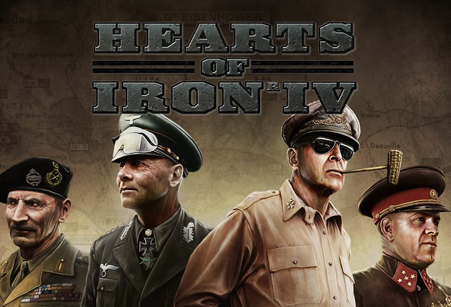
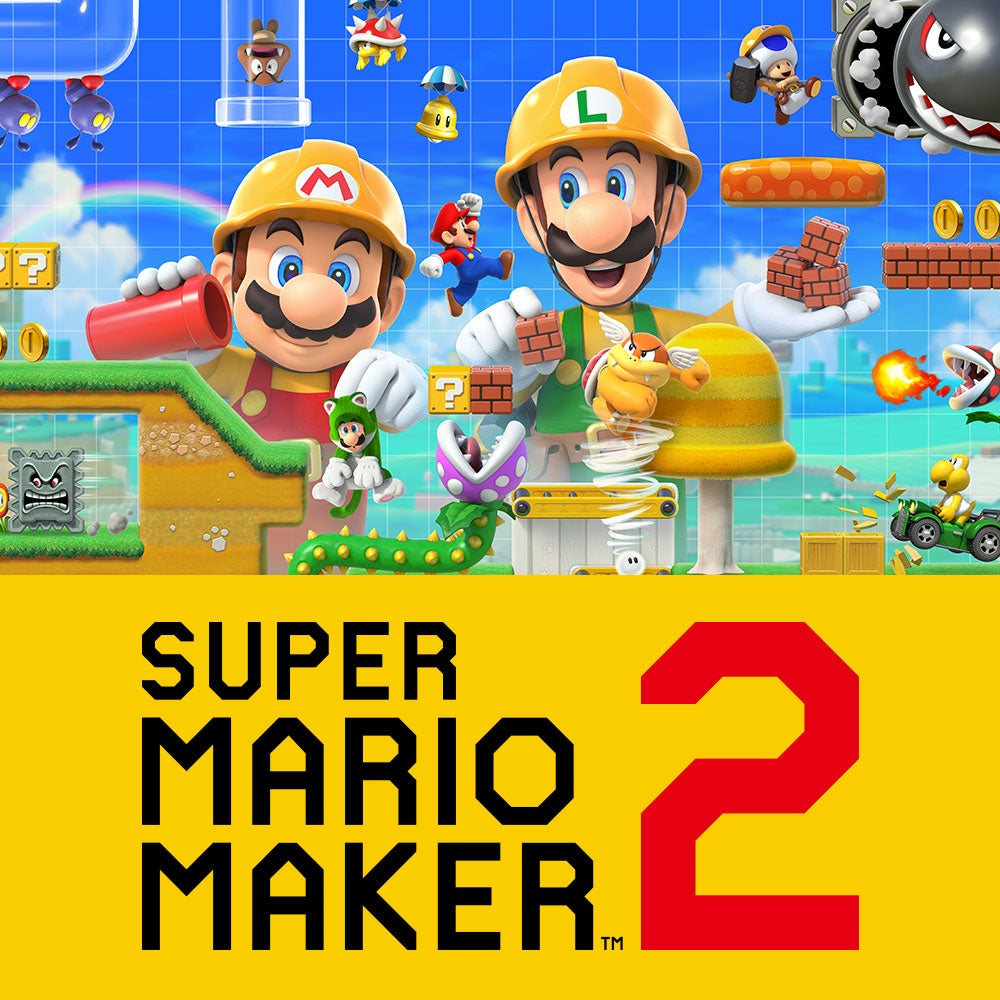

Videogames/Filmes que gosto
Desde quando eu era pequeno, sempre fui fã de videogames, especialmente jogos da Nintendo.
Hoje possuo um Nintendo Switch e um PC, no entanto estou jogando mais no meu PC.

Trailer
Hearts of Iron IV é um jogo onde você controla uma nação durante a 2° Guerra Mundial,
liderando sua economia, diplomacia, exército, etc.
É um jogo que se pode jogar por horas, já que você pode criar vários desfechos alternativos para a guerra.

Trailer
O Super Mario Maker 2 é um jogo que permite aos jogadores a criação de suas próprias fases
da famigerada franquia do Mario, além de poderem jogar as fases de outros jogadores.
É um jogo muito divertido, especialmente para os fãs de longo prazo do Mario.

Trailer
The Legend of Zelda: Breath of the Wild, considerado um dos jogos mais bem avaliados da história dos videogames, é um jogo que não jogo mais,
mas achei interessante colocá-lo pois me marcou bastante.